library(tidyverse)
library(ggplot2)
library(mosaic)
library(dplyr)
library(pubtheme)
library(janitor)
library(leaflet)
library(gganimate)
library(shiny)
library(stringr)
library(patchwork)apush-data-anal-FiveHive
*This document is intended to complement the graphs, charts, and other
data analysis already done in the google spreadsheet by providing deeper
analyses and examining relationships between variables for APUSH data.
*Data is updated as of 05/31/2025.
I. Reading the Data
d = read.csv('data/apush.csv')
head(d) ID Where.was.survey.found. Taken.APUSH.exam.
1 1 AP Students Discord Yes
2 2 AP Students Discord Yes
3 3 AP Students Discord Yes
4 4 AP Students Discord Yes
5 5 AP Students Discord Yes
6 6 AP Students Discord Yes
Other.AP.Courses
1 Computer Science A
2
3 English Language and Composition
4 Calculus BC, English Language and Composition, Environmental Science
5 English Language and Composition, Physics 1: Algebra Based, Statistics
6
Political.Stance Easy.to.Balance. See.you.soon. Taken.APUSH.
1 -3 5 NA NA
2 3 NA NA NA
3 -4 1 NA NA
4 NA 3 NA NA
5 -4 6 NA NA
6 -3 6 NA NA
Intend.to.take.APUSH. Taken.non.AP.equivalent.to.APUSH.
1 NA NA
2 NA NA
3 NA NA
4 NA NA
5 NA NA
6 NA NA
Add.anything.you.d.like.to.mention.regarding.whether.you.ll.take.AP.United.States.History.in.the.future.
1 NA
2 NA
3 NA
4 NA
5 NA
6 NA
Why.did.you.not.take.the.AP.exam.
1 NA
2 NA
3 NA
4 NA
5 NA
6 NA
History.classes.before.APUSH
1 Regular/Honors/Pre-AP World History and Geography
2 Regular/Honors/Pre-AP World History and Geography, Regular/Honors U.S. History, Regular/Honors/AP United States Goverment and Politics/Comparative Government and Politics
3 Regular/Honors/Pre-AP World History and Geography
4 Regular/Honors/Pre-AP World History and Geography, Regular/Honors/AP Human Geography
5 Regular/Honors/Pre-AP World History and Geography, Regular/Honors/AP Human Geography, AP World History
6 AP World History
Prerequisites
1 Regular/Honors/Pre-AP World History and Geography, Regular/Honors/AP United States Goverment and Politics/Comparative Government and Politics
2 Regular/Honors/Pre-AP World History and Geography
3 Regular/Honors/Pre-AP World History and Geography
4 Regular/Honors/Pre-AP World History and Geography
5 Regular/Honors/Pre-AP World History and Geography, Regular/Honors/AP Human Geography
6 Regular/Honors U.S. History
Expected.difficulty.of.course
1 9
2 5
3 7
4 8
5 8
6 5
Expected.difficult.things
1 Work load and writing so much
2 Content amount
3 Remembering the dates of events and how each event affects one another.
4 knowing all the content and staying interested in the material
5 the workload
6
Expected.easy.things
1 Comprehending content
2 The tests
3 Early American history
4 understanding what questions were asking, as i had already taken ap world
5 the content
6
Were.those.feelings.accurate.
1 Yes
2 No
3 Yes
4 Yes
5 No
6 No
Misjudged.difficulty
1 Difficulty of the writing
2 Content depth
3 I thought the multiple choice portion was going to be more difficult than it was.
4 LEQs
5 the content is super in depth and i severely misjudged that
6
Grade.Level College.Board.FRQs College.Board.Course.and.Exam.Description
1 Sophomore Didn't use Didn't use
2 Junior Used-Liked Used-Disliked
3 Junior Used-Liked Didn't use
4 Junior Used-Liked Used-Very Helpful
5 Junior Used-Liked Used-Mediocre
6 Sophomore Didn't use Didn't use
AP.Daily.Practice.Sessions..videos.released.in.April.by.CB.
1 Didn't use
2 Didn't use
3 Didn't use
4 Didn't use
5 Didn't use
6 Didn't use
AP.Classroom.Topic.Videos AP.Classroom.Questions.Progress.Checks
1 Used-Liked Used-Very Helpful
2 Didn't use Used-Liked
3 Used-Disliked Used-Mediocre
4 Didn't use Used-Liked
5 Didn't use Didn't use
6 Didn't use Didn't use
AP.Students.Reddit.Discord Khan.Academy Content.Textbooks
1 Used-Very Helpful Used-Liked Didn't use
2 Didn't use Didn't use Used-Disliked
3 Didn't use Didn't use Didn't use
4 Didn't use Didn't use Used-Mediocre
5 Used-Mediocre Didn't use Didn't use
6 Didn't use Didn't use Used-Mediocre
Review.Textbooks..Princeton..Barrons..etc.. Heimler.s.History
1 Didn't use Used-Mediocre
2 Didn't use Used-Disliked
3 Didn't use Didn't use
4 Didn't use Used-Very Helpful
5 Didn't use Used-Very Helpful
6 Didn't use Used-Very Helpful
Gilder.Lehrman.Institute TomRichey.net Marco.Learning Albert.io Chegg
1 Didn't use Didn't use Didn't use Didn't use Didn't use
2 Didn't use Didn't use Didn't use Didn't use Didn't use
3 Didn't use Didn't use Didn't use Didn't use Didn't use
4 Didn't use Didn't use Didn't use Didn't use Didn't use
5 Didn't use Didn't use Didn't use Used-Liked Didn't use
6 Didn't use Didn't use Didn't use Didn't use Didn't use
Quizlet Fiveable Anti.Social.Studies
1 Didn't use Used-Mediocre Didn't use
2 Used-Liked Didn't use Didn't use
3 Used-Very Helpful Didn't use Didn't use
4 Used-Very Helpful Didn't use Didn't use
5 Used-Liked Didn't use Didn't use
6 Didn't use Didn't use Didn't use
Elaborate.on.resources
1 progress checks are the best
2
3 The problems provided by college board were harder than the ones on the AP test this year, likely because the ones on the college board website encompassed a larger portion of US history than the test did.
4 i used the american pageant textbook for finding vocab, which i then used quizlet to study. the CED was helpful in letting me understand what i needed to study for a unit specifically. heimler is just the GOAT of history and explains it SO well, so he was often my study buddy.
5 Heimler’s history is really really good, i’ve used it two years in a row and it has not failed. I used CrackAp.com for practice problems which were quite similar to the ones on the ap exam.
6
How.well.prepared.did.you.feel.for.your.exam
1 4
2 7
3 7
4 8
5 7
6 4
What.did.you.feel.well.prepared.for. What.did.you.feel.ill.prepared.for.
1 Unit 6-9 Units from early in the year
2 MCQs FRQs, contemp history (post cold war)
3 The writing portions of the test. The multiple choice.
4 SAQ, MCQ LEQ
5 The LEQ and the SAQ the DBQ
6
Accurate.reflection.during.test. X.Unit.1..1491.1607. X.Unit.2..1607.1754.
1 No 3rd
2 No 1st
3 No
4 Yes
5 No
6 Yes
X.Unit.3..1754.1800. X.Unit.4..1800.1848. X.Unit.5..1844.1877.
1 1st 2nd
2 2nd
3 1st 2nd
4 2nd
5
6 3rd 2nd
X.Unit.6..1865.1898. X.Unit.7..1890.1945. X.Unit.8..1945.1980.
1
2 3rd
3 3rd
4 3rd 1st
5 1st 2nd 3rd
6 1st
X.Unit.9..1980.Present.
1
2
3
4
5
6
Why.were.those.units.hard.
1 A lot of the terminology and content was different from modern days so it was more difficult to comprehend than the modern units
2 Too much content, Difficult to link events together, Interpreting primary source documents, The other units were just relatively easier
3 The other units were just relatively easier
4 Too much content, The other units were just relatively easier
5 Too much content, Difficult to link events together, Didn't review it enough
6 Too much content, The other units were just relatively easier
X.Unit.1..1491.1607..1 X.Unit.2..1607.1754..1 X.Unit.3..1754.1800..1
1
2 1st
3 1st 2nd
4 1st 3rd
5 1st 2nd 3rd
6 1st 2nd 3rd
X.Unit.4..1800.1848..1 X.Unit.5..1844.1877..1 X.Unit.6..1865.1898..1
1 2nd
2 2nd
3
4 2nd
5
6
X.Unit.7..1890.1945..1 X.Unit.8..1945.1980..1 X.Unit.9..1980.Present..1
1 3rd 1st
2 3rd
3 3rd
4
5
6
Why.were.those.units.easy.
1 Less content, Easier to link events together, Easier to connect to historical themes, Easier to apply historical thinking skills (change, continuity, etc), The other units were just relatively harder
2 Less content, Easier to link events together, Easier to interpret primary source documents, Easier to connect to historical themes, Easier to apply historical thinking skills (change, continuity, etc), The other units were just relatively harder
3 Easier to connect to historical themes, Easier to apply historical thinking skills (change, continuity, etc), The other units were just relatively harder
4 Less content, Easier to link events together, Easier to connect to historical themes, Easier to apply historical thinking skills (change, continuity, etc), The other units were just relatively harder
5 Less content, Easier to link events together, Easier to connect to historical themes, The other units were just relatively harder
6 Previous learning
American...National.Identity Work..Exchange....Technology
1 8th 1st
2 6th 1st
3 8th 7th
4 3rd 4th
5 7th 5th
6 5th 6th
Geography...Environment Immigration...Settlement Politics...Power
1 7th 6th 5th
2 2nd 5th 4th
3 1st 6th 5th
4 2nd 1st 7th
5 2nd 4th 1st
6 7th 1st 2nd
America.in.the.World American...Regional.Culture Social.Structures
1 4th 3rd 2nd
2 7th 8th 3rd
3 4th 3rd 2nd
4 8th 6th 5th
5 6th 8th 3rd
6 8th 3rd 4th
Explain.your.ranking.of.the.course.themes.by.difficulty.
1 national identity is just a pretty obscure topic, the rest are all pretty close in difficulty
2 N/A
3 I struggle with geography, but the other themes are relatively easy to get ahold of.
4 some themes, specifically politics and power and social structures, were present in AP World, so i was good at looking for those. i also found america in the world easier because after a certain point, our position and involvement in the world just snowballs and becomes greater and greater with every action
5 They are very subjective to my perspective of history and understanding of the content.
6 Because of how much experience i had with those topics in previous classes
Weeks.per.unit How.did.you.feel.about.the.pace.of.the.course.
1 NA 7
2 6 8
3 2 8
4 3 5
5 8 7
6 NA 8
Time.management.during.exam
1 9
2 3
3 10
4 7
5 5
6 3
What.did.you.score.on.the.AP.United.States.History.exam.
1 5
2 4
3 4
4 4
5 4
6 3
How.did.you.primarily.prepare.for.the.exam.
1 Course at my high school
2 Course at my high school
3 Course at my high school
4 Course at my high school
5 Course at my high school
6 Course at my high school
How.easy.is.it.to.self.study.AP.United.States.History.
1 NA
2 NA
3 NA
4 NA
5 NA
6 NA
What.elements.of.the.course.did.you.find.easy.to.self.study.
1
2
3
4
5
6
What.elements.of.the.course.did.you.find.difficult.to.self.study.
1
2
3
4
5
6
How.many.weeks.did.you.spend.learning.for.the.AP.United.States.History.exam.
1 NA
2 NA
3 NA
4 NA
5 NA
6 NA
How.many.hours.a.week.did.you.dedicate.to.self.studying.AP.United.States.History.
1 NA
2 NA
3 NA
4 NA
5 NA
6 NA
How.many.weeks.did.you.spend.reviewing..not.learning..for.the.AP.United.States.History.exam.as.you.self.studied.
1 NA
2 NA
3 NA
4 NA
5 NA
6 NA
If.you.self.studied..what.would.your.advice.be.for.others.who.wish.to.do.the.same.
1
2
3
4
5
6
Rate.the.quality.of.your.teacher.s.preparation.for.the.exam.
1 9
2 4
3 8
4 8
5 7
6 6
Good.teacher.traits
1
2 Pacing helped us have ample time to review
3 He helped solidify concepts and reviewed material well.
4 the biggest thing was doing units not as collegeboard made them, but based on different events and themes that allowed for easier consumption of information.
5 He explained things really well and gave a lot of homework which seemed bad in the moment but it established strong levels of understanding for the content on the exam.
6
Bad.teacher.traits
1
2 Not focused on the exam, wasn't helpful for review
3 There could have been more of a focus on the essay portions and the middle parts of US history.
4 the aforementioned unit separation did make my mental timeline a little fuzzy. events would happen in the same timeframe, but because they were in different units, my brain wouldn’t let me associate them with each other (for example, we split one period into the cold war and civil rights. the two units made it difficult to remember they were at the same time)
5 The very rushed nature of the class which really wasn’t my teacher’s fault but it definitely hindered my depth of understanding for the class.
6
Hours.week..not.before.exam. Weeks.at.end.of.year.reviewing
1 1.0 5
2 8.0 6
3 2.0 2
4 1.5 2
5 5.0 5
6 2.0 2
How.many.weeks..at.the.end.of.the.year..did.you.dedicate.to.studying.for.the.AP.United.States.History.exam.outside.of.the.classroom.
1 1
2 8
3 0
4 1
5 20
6 3
Did.you.find.it.necessary.to.seek.additional.help.outside.of.your.regular.class.time..If.so..how.did.you.access.this.help.
1
2 Peers
3 No
4 no
5 extra help w my teacher
6
How.hard.is.AP.United.States.History. X.Multiple.Choice.Questions..MCQs..
1 5 1
2 8 1
3 1 1
4 5 2
5 9 3
6 8 1
X.Short.Answer.Questions..SAQs.. X.Document.Based.Question..DBQ..
1 2 4
2 3 5
3 1 2
4 2 3
5 2 4
6 4 3
X.Long.Essay.Question..LEQ..
1 2
2 4
3 3
4 3
5 4
6 5
Difficult.to.identify.appropriate.thinking.skill.
1 5
2 7
3 1
4 1
5 7
6 3
Is.APUSH.more.memorization.or.skill.based.thinking.skills.and.reasoning.process..
1 1
2 -3
3 -3
4 1
5 2
6 -2
Is.AP.United.States.History.fun.
1 No
2 No
3 Yes
4 Yes
5 Yes
6 No
X.THEME.1..AMERICAN.AND.NATIONAL.IDENTITY..NAT..
1 2
2 3
3 3
4 4
5 2
6 1
X..THEME.2..WORK..EXCHANGE..AND.TECHNOLOGY..WXT..
1 5
2 2
3 3
4 2
5 3
6 1
X.THEME.3..GEOGRAPHY.AND.THE.ENVIRONMENT..GEO..
1 2
2 2
3 1
4 2
5 4
6 1
X.THEME.4..MIGRATION.AND.SETTLEMENT..MIG..
1 4
2 4
3 5
4 2
5 1
6 1
X.THEME.5..POLITICS.AND.POWER..PCE.. X.THEME.6..AMERICA.IN.THE.WORLD..WOR...
1 5 5
2 3 4
3 4 1
4 4 5
5 3 5
6 1 1
X.THEME.7..AMERICAN.AND.REGIONAL.CULTURE..ARC..
1 5
2 2
3 1
4 3
5 5
6 1
X.THEME.8..SOCIAL.STRUCTURES..SOC.. X.Developments.and.Processes.
1 5 1
2 4 3
3 5 4
4 3 2
5 4 2
6 1 1
X.Sourcing.and.Situation. X.Claims.and.Evidence.in.sources.
1 2 3
2 2 3
3 1 1
4 3 3
5 5 3
6 2 4
X.Contextualization. X.Making.Connections. X.Argumentation. X.Comparison.
1 1 3 3 1
2 3 3 4 3
3 3 4 1 1
4 1 3 2 1
5 1 1 4 4
6 2 2 4 3
X.Causation. Difficulty.of..Continuity.and.Change.
1 4 1
2 3 4
3 2 3
4 1 3
5 5 3
6 2 4
How.much.did.World.help.with.APUSH How.much.did.Euro.help.with.APUSH
1
2
3 Helped a little
4 Helped a lot
5 Helped a lot
6 Helped a little
Comparing.World.to.APUSH Comparing.Euro.to.APUSH Easier.to.gain.points.now.
1 Not taken yet Not taken yet 2
2 Not taken yet Not taken yet 4
3 Harder than APUSH Not taken yet 5
4 Easier than APUSH Not taken yet 1
5 Easier than APUSH Not taken yet 5
6 Easier than APUSH Not taken yet 3
Study.Groups What.year.did.you.take.APUSH.
1 I didn't use study groups/sessions May 2024 or after
2 No May 2024 or after
3 I didn't use study groups/sessions May 2024 or after
4 I didn't use study groups/sessions May 2024 or after
5 No May 2024 or after
6 I didn't use study groups/sessions May 2024 or after
Appealing.Units.Topics
1
2
3
4 cold war, gilded age/whatever the era of like meat packing and calling out big oil is (i can’t remember the name)
5 unit 9 was most interesting
6
Words.of.Wisdom
1 You don't have to dedicate entire days to the class or stay up late studying. If you just study a little bit each day and stay consistent, then you'll do fine.
2
3 Review your notes and continuously connect events to each other.
4 Do not try to be too fancy with your writing. This is an AP history class, not your honors english class where you had to write beautifully. With the new rubric, you can easily get the complexity point without being too fancy, and the fancy writing will just make it more likely that you contradict yourself and lose points.
5 Please study routinely and try to retain the information you learn throughout the year, instead of one massive cramming session at the very end
6
DBQ..Second.Evidence.Point DBQ...Analysis.Point DBQ...Complexity
1 4 4 5
2 5 4 4
3 3 3 3
4 4 4 5
5 2 1 4
6 3 3 4
LEQ...Evidence.Point LEQ...Complexity.Point
1 4 5
2 4 4
3 3 3
4 3 5
5 2 3
6 3 2
Different.score.if.taken.recently. Did.you.use.AI.as.a.learning.tool.
1 NA Yes
2 NA Yes
3 NA Yes
4 NA No
5 NA No
6 NA No
Which.AI.model.did.you.use. How.useful.was.it.on.a.scale.of.1.to.10.
1 ChatGPT 3
2 ChatGPT 6
3 ChatGPT, NotebookLM 8
4 NA
5 NA
6 NA
What.was.AI.good.at.explaining.
1
2
3 It was good at contextualizing events and connecting them to one another.
4
5
6
Where.was.it.lackluster.
1
2 Lack of connection to APUSH-specific content
3 Responses were often way more information than I needed.
4
5
6
Taken.higher.level.studies. Smooth.transition.to.higher.level.studies.
1 No NA
2 No NA
3 No NA
4 No NA
5 No NA
6 No NA
Explain.the.above.response.
1
2
3
4
5
6 II. Cleaning the Data
•Initial examination suggests the data is readable enough to not demand any
significant cleaning at the very beginning.
•Instead, we jump right into the next steps and clean as needed
(our end product is not the data set but rather a document that
cleanly summarizes key findings from the data analysis, as well as other info).
•For convenience and readability, we will still do some of our
necessary cleaning here that we would’ve done later on.
#Renaming columns
d2 = d %>%
rename(SCORE = What.did.you.score.on.the.AP.United.States.History.exam.) %>%
rename(class = Grade.Level) %>%
rename(teach.prep = Rate.the.quality.of.your.teacher.s.preparation.for.the.exam.) %>%
rename(overall.prep =
How.well.prepared.did.you.feel.for.your.exam) %>%
rename(overall.diff = How.hard.is.AP.United.States.History.) %>%
rename(other.courses = Other.AP.Courses) %>%
rename(expected.diff = Expected.difficulty.of.course) %>%
rename(enjoy = Is.AP.United.States.History.fun.) %>%
rename(ai = Did.you.use.AI.as.a.learning.tool.) %>%
rename(theme1 = X.THEME.1..AMERICAN.AND.NATIONAL.IDENTITY..NAT..) %>%
rename(theme2 = X..THEME.2..WORK..EXCHANGE..AND.TECHNOLOGY..WXT..) %>%
rename(theme3 = X.THEME.3..GEOGRAPHY.AND.THE.ENVIRONMENT..GEO..) %>%
rename(theme4 = X.THEME.4..MIGRATION.AND.SETTLEMENT..MIG..) %>%
rename(theme5 = X.THEME.5..POLITICS.AND.POWER..PCE..) %>%
rename(theme6 = X.THEME.6..AMERICA.IN.THE.WORLD..WOR...) %>%
rename(theme7 = X.THEME.7..AMERICAN.AND.REGIONAL.CULTURE..ARC..) %>%
rename(theme8 = X.THEME.8..SOCIAL.STRUCTURES..SOC..) %>%
rename(Developments.and.Processes = X.Developments.and.Processes.) %>%
rename(Sourcing.and.Citation = X.Sourcing.and.Situation.) %>%
rename(Claim.and.Evidence.in.Sources = X.Claims.and.Evidence.in.sources.) %>%
rename(Contextualization = X.Contextualization.) %>%
rename(Making.Connections = X.Making.Connections.) %>%
rename(Argumentation = X.Argumentation.)III. Visualization and Analysis
•Graphs and charts have already been made for most questions
in the spreadsheet; however, we may still be interested in seeing
if there are possible relationships.
•Example: We might want to look at the distribution of scores for each
grade level.
•Motivation: Some people say that you should only take APUSH when you’re a
junior or senior. But is that really true? Could it really be that how older one is
(to graduating) has some effects on the exam score?
g = d2 %>%
ggplot(aes(class, SCORE)) +
geom_boxplot()
g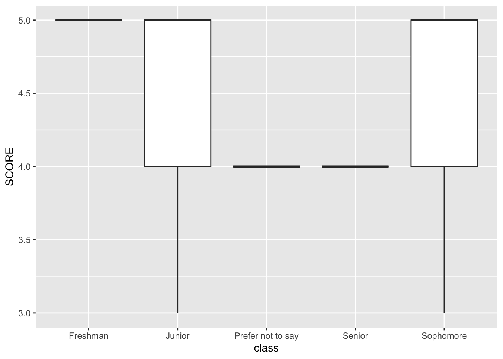
Looks like the only groups that have multiple values of score are juniors
and sophomores. The rest are concentrated on only one value. This likely
indicates not as many responses in these groups as for juniors
and sophomores. We can take a look at these two individually and compare
their distribution of scores:
#Sophomores
d2_sopho = d2 %>%
filter(class == 'Sophomore')
g_sopho = d2_sopho %>%
ggplot(aes(x=SCORE)) +
geom_histogram(bins = 3) +
labs(title = "Histogram of Exam Scores (Sophomores)",
xlab = "Score",
ylab = "Frequency")
g_sopho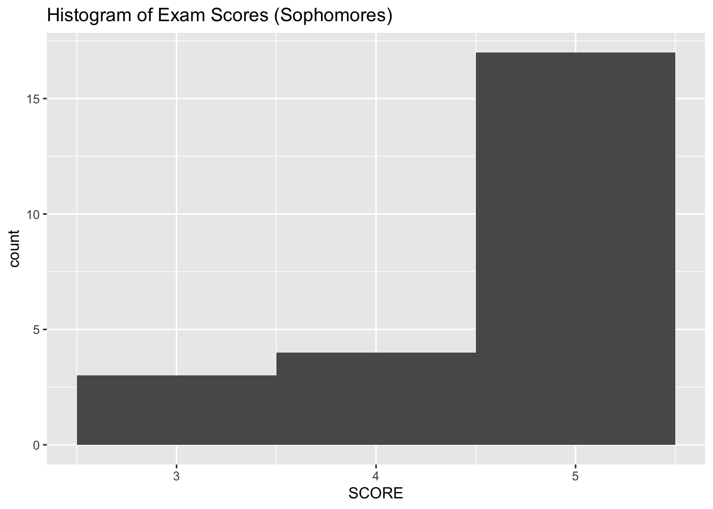
d2_junior = d2 %>%
filter(class == 'Junior')
g_junior = d2_junior %>%
ggplot(aes(x=SCORE)) +
geom_histogram(bins=3) +
labs(title = "Histogram of Exam Scores (Juniors)",
xlab = "Score",
ylab = "Frequency")
g_junior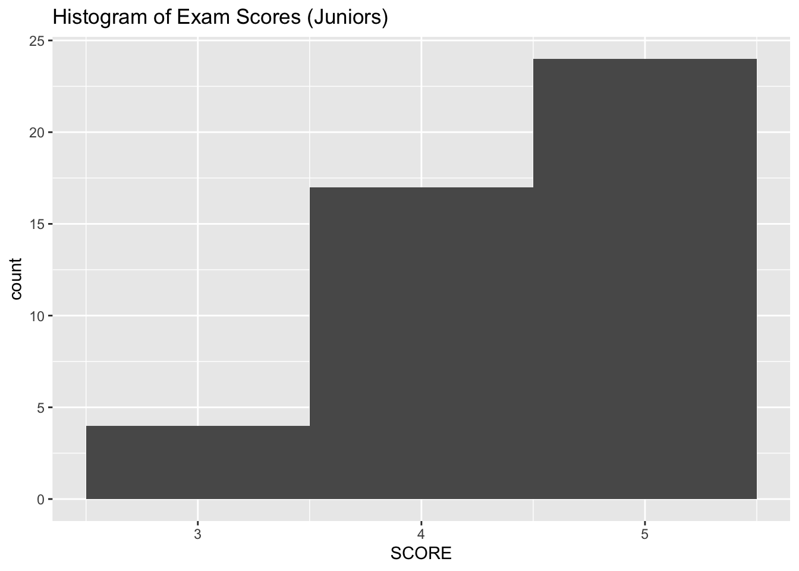
It does appear that juniors have a higher frequency of better scores, but
this might this be due to the larger sample size (more juniors happen to have
responded to the survey)?
length(d2_junior$SCORE)[1] 45length(d2_sopho$SCORE)[1] 24Let’s take a look at percentages, which is more fair when comparing
count data.
paste("% of 'good' scores for juniors (4/5): ",
sum(d2_junior$SCORE == 4 | d2_junior$SCORE == 5) /
length(d2_junior$SCORE))[1] "% of 'good' scores for juniors (4/5): 0.911111111111111"paste("% of 'good' scores for sophomores (4/5): ",
sum(d2_sopho$SCORE == 4 | d2_sopho$SCORE == 5) /
length(d2_sopho$SCORE))[1] "% of 'good' scores for sophomores (4/5): 0.875"paste("% of max scores for juniors (5): ",
sum(d2_junior$SCORE == 5) / length(d2_junior$SCORE))[1] "% of max scores for juniors (5): 0.533333333333333"paste("% of max scores for sophomores (5): ",
sum(d2_sopho$SCORE == 5) / length(d2_sopho$SCORE))[1] "% of max scores for sophomores (5): 0.708333333333333"Something interesting just happened. When we look at 4s and 5s, we see
that juniors slightly edge out, but when just looking at 5s, the maximum
possible score reported on the exam, there is a significant proportion of
sophomores vs. juniors! Why might this be? It makes sense if we consider
that those who take the course/exam as a sophomore may feel more confident
in themselves and could be stronger students—hence, they take it earlier than
some of their peers. Whereas for juniors, there are a larger amount of people
overall and this includes those who may be slightly weaker in these
types of exams, but feel like they still need to take it before they graduate.
Do these findings apply to other students outside of the respondents? It turns
out, yes! Looking at the data published by the CollegeBoard, we see these
trends almost exactly match up
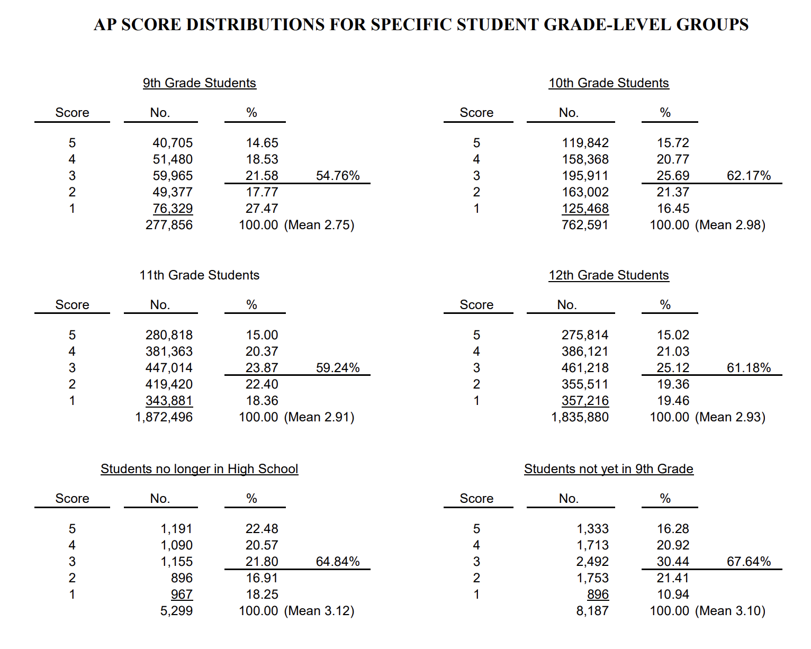
Even though significantly more juniors took the exam \((N=1,872,496)\) ,
a higher proportion of sophomores scored a 5 (\(25.69\%\) vs. \(23.87\%\)).
Does this mean you won’t get a 5 because you’re a junior? No!
Of course it’s more complicated than that and it likely depends more on
how much effort you yourself put it, but this is an interesting insight
that the data helped to reveal.
So clearly, we’re interested in scores, as it’s a solid way to
quantify performance, even if it’s not always perfect. Is there other
variables that we want to examine? Another factor that might be more solid
than grade level could be preparedness for the exam. One variable we
gathered data on is the level of perceived preparedness by the teachers.
g2 = d2 %>%
ggplot(aes(x=teach.prep, y = SCORE)) +
geom_point(alpha=0.2) +
geom_smooth() +
labs(title = "Scatterplot of teacher preparedness vs. score",
x = "Teacher Prep Rating",
y = "Exam Score")
g2`geom_smooth()` using method = 'loess' and formula = 'y ~ x'Warning: Removed 10 rows containing non-finite outside the scale range
(`stat_smooth()`).Warning: Removed 10 rows containing missing values or values outside the scale range
(`geom_point()`).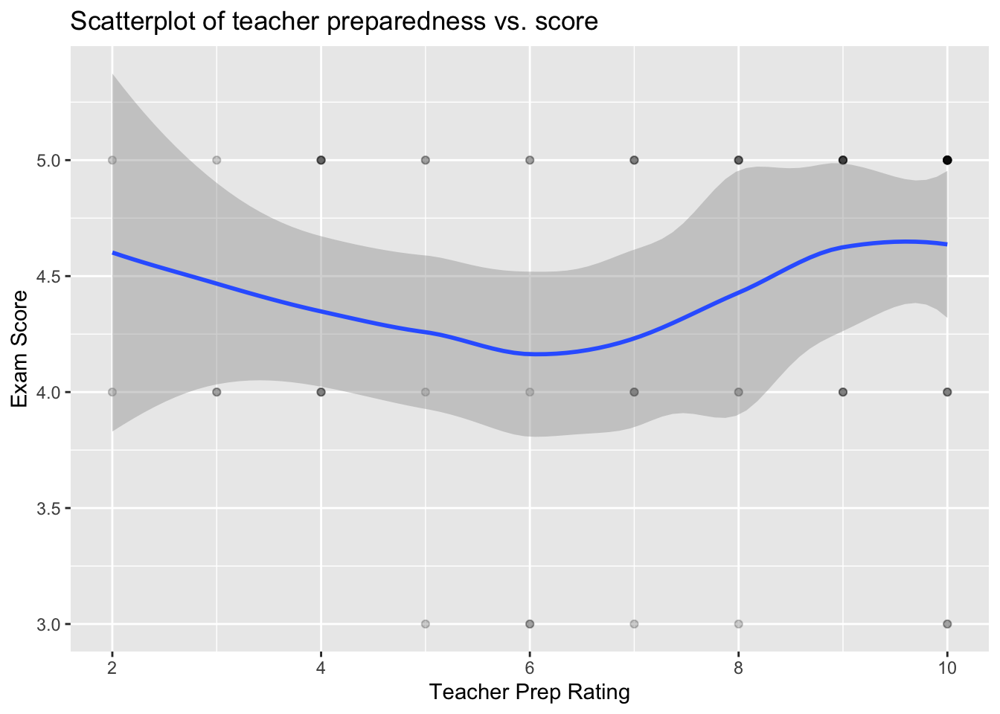
Using alpha, which makes points more transparent with less overlap, we see
that there could be some relationship. Points are more solid for scores of
5 when the preparedness rating is higher, indicating greater frequency of
occurrence (more students who got an exam score of 5 reported
a score of 8, 9, or 10 the most for how well their teacher prepared them). We
can also see this somewhat with the trend line, as it has a negative relationship
(slope) with score for small values of teaching rating but then it increases
at the midway point, which is exactly what we might expect!
At this point, there are a few more questions we might have to dive deeper on.
I finish this section by presenting some final visualizations for these
questions:
Is there any relationship between how the student feels overall #in terms of preparedness vs. how well their teacher prepared them?
g3 = d2 %>%
ggplot(aes(x=teach.prep, y=overall.prep)) +
geom_point() +
geom_smooth()
g3`geom_smooth()` using method = 'loess' and formula = 'y ~ x'Warning: Removed 10 rows containing non-finite outside the scale range
(`stat_smooth()`).Warning: Removed 10 rows containing missing values or values outside the scale range
(`geom_point()`).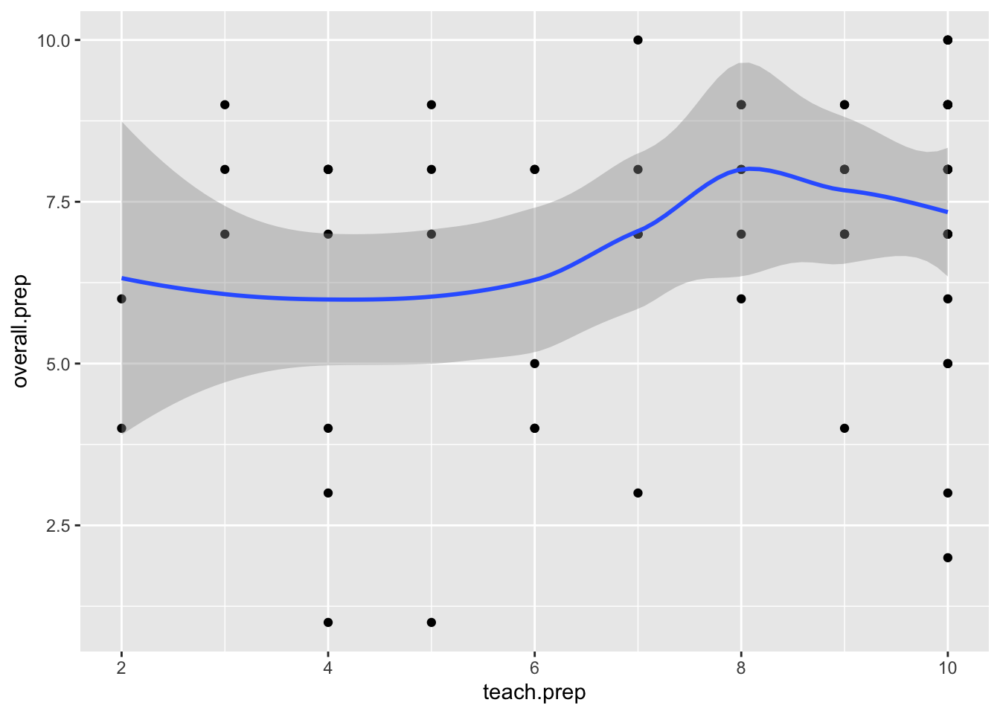
What other classes are students taking, and do these have some relationship with how well they scored on the exam?
We know APUSH is a history class—no arguments there! Since other
history use much of the same course/exam format and government classes
are sort of in the same ballpark of “studying one’s country,” they
may have some correlation with performance in APUSH.
#Let's compare history/govt. vs. non-history/govt. first
d2_good_courses = d2 %>%
mutate(good.course = as.integer(
grepl("[Hh]istory|[Ee]uro|[Ww]orld|[Gg]ov", other.courses, ignore.case = TRUE)
)
)
d2_good_courses_only = d2_good_courses %>%
filter(good.course == 1)
g4 = d2_good_courses_only %>%
ggplot(aes(x = SCORE)) +
geom_histogram(
aes(y = ..count.. / sum(..count..) * 100),
bins = 3,
fill = "steelblue",
color = "white",
alpha = 0.7
) +
scale_y_continuous(
name = "Percentage of observations (%)",
expand = expansion(mult = c(0, 0.05))
) +
labs(
x = "Exam Scores",
title = "Scores of those taking other history/govt classes (%)"
) +
theme_minimal()
g4Warning: The dot-dot notation (`..count..`) was deprecated in ggplot2 3.4.0.
ℹ Please use `after_stat(count)` instead.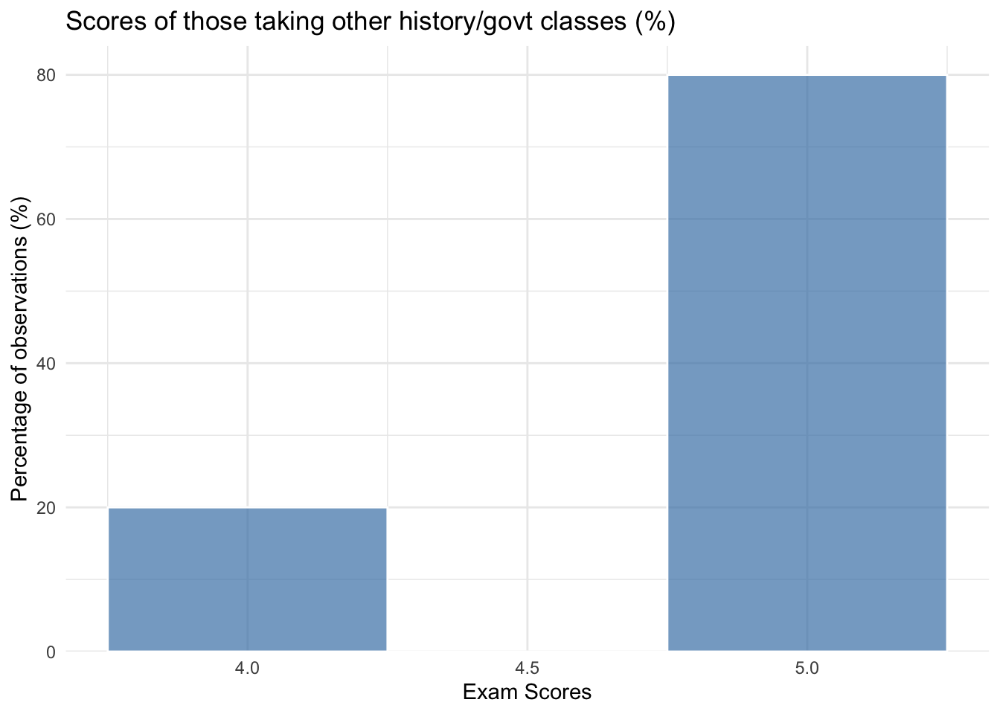
d2_other_courses_only = d2_good_courses %>%
filter(good.course == 0)
g4_2 = d2_other_courses_only %>%
ggplot(aes(x = SCORE)) +
geom_histogram(
aes(y = ..count.. / sum(..count..) * 100),
bins = 3,
fill = "steelblue",
color = "white",
alpha = 0.7
) +
scale_y_continuous(
name = "Percentage of observations (%)",
expand = expansion(mult = c(0, 0.05))
) +
labs(
x = "Exam Scores",
title = "Scores of those NOT taking other history/govt classes (%)"
) +
theme_minimal()
g4_2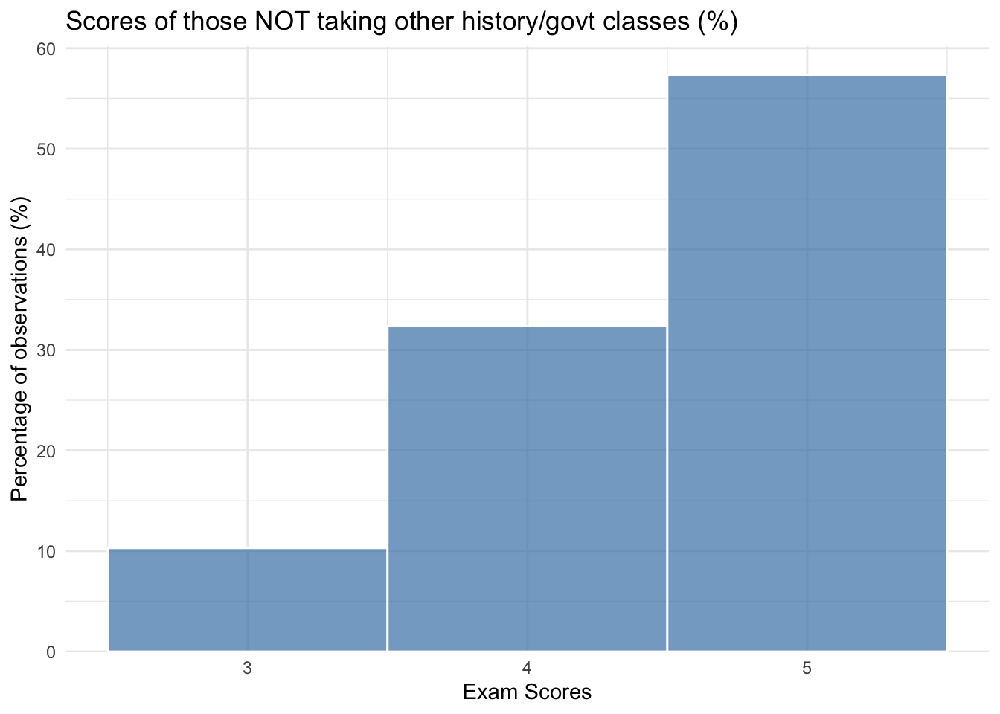
score.diff.3 = mean(d2_good_courses_only$SCORE == 3) - mean(d2_other_courses_only$SCORE == 3)
score.diff.4 = mean(d2_good_courses_only$SCORE == 4) - mean(d2_other_courses_only$SCORE == 4)
score.diff.5 = mean(d2_good_courses_only$SCORE == 5) - mean(d2_other_courses_only$SCORE == 5)
good.score.diff = c(score.diff.3*100,
score.diff.4*100,
score.diff.5*100)
score.diff.df = data.frame(x=c(3,4,5), y=good.score.diff)
g4_3 = score.diff.df %>%
ggplot(aes(x=factor(x), y=y)) +
geom_col(fill = "steelblue", width = 0.6) +
geom_hline(yintercept = 0, linetype = "solid",
color = "black", size = 0.5) +
scale_x_discrete(name = "Exam Scores") +
scale_y_continuous(name = "Difference (%)") +
ggtitle("Proportional Difference in Scores (hist/govt. minus non-hist/govt.)") +
theme_minimal()Warning: Using `size` aesthetic for lines was deprecated in ggplot2 3.4.0.
ℹ Please use `linewidth` instead.g4_3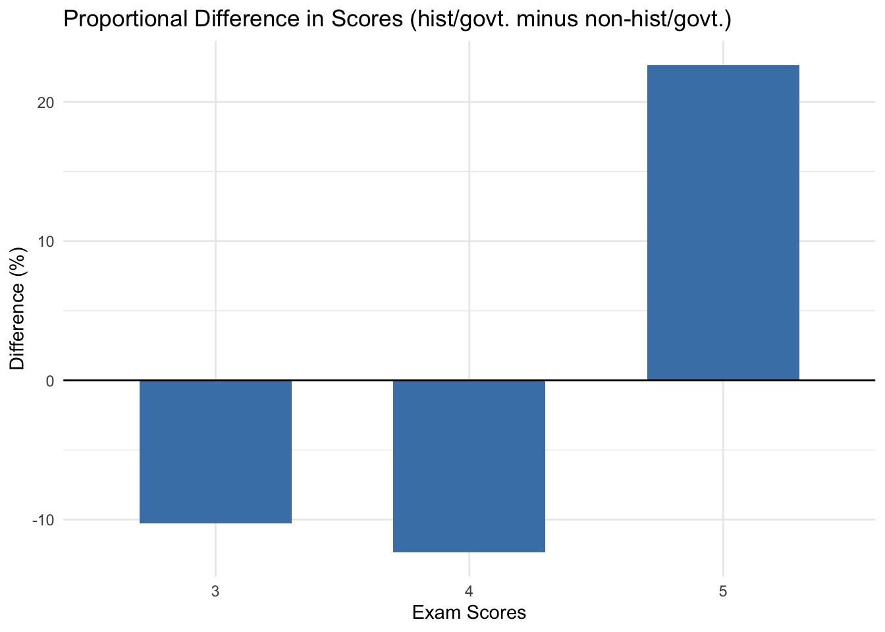
Interesting, so if we only look at the proportion of 5s, what class(es) will be
associated with it the most, i.e. what other class are people taking that will
show up the most when we filter by only those who got 5s?
d2_onlyfives = d2 %>%
filter(SCORE == 5)
unique(d2_onlyfives$other.courses) [1] "Computer Science A"
[2] "Calculus AB, Chemistry, Environmental Science, Statistics"
[3] "Computer Science Principles, Precalculus, Spanish Language and Culture, Statistics"
[4] ""
[5] "Art History, Precalculus"
[6] "Calculus AB, Chemistry, English Language and Composition, Spanish Language and Culture"
[7] "Biology, Calculus BC, English Language and Composition"
[8] "Computer Science Principles"
[9] "Biology, English Literature and Composition, Spanish Language and Culture, Statistics"
[10] "Chemistry, English Language and Composition, Statistics"
[11] "Chemistry, English Language and Composition, Physics C: Electricity and Magnetism, Physics C: Mechanics, Research, Statistics"
[12] "Biology, Computer Science Principles, English Language and Composition"
[13] "English Language and Composition, Environmental Science, Physics 1: Algebra Based, Precalculus"
[14] "Biology, English Language and Composition"
[15] "Calculus AB"
[16] "Computer Science A, Statistics"
[17] "Computer Science A, English Language and Composition"
[18] "Comparative Government and Politics, English Language and Composition, Physics C: Electricity and Magnetism, Physics C: Mechanics"
[19] "Chemistry, English Language and Composition, Psychology"
[20] "English Language and Composition"
[21] "Biology, Calculus BC, English Language and Composition, French Language and Culture"
[22] "Computer Science Principles, English Language and Composition"
[23] "World History: Modern"
[24] "English Literature and Composition, Precalculus"
[25] "Biology, Computer Science A"
[26] "Comparative Government and Politics, United States Government and Politics"
[27] "English Language and Composition, Physics 1: Algebra Based, Precalculus"
[28] "Calculus BC, Physics C: Mechanics"
[29] "Chinese Language and Culture, Precalculus"
[30] "English Language and Composition, Spanish Language and Culture"
[31] "Chemistry, English Language and Composition, Psychology, Research" courses = c(
"Computer Science A",
"Calculus AB, Chemistry, Environmental Science, Statistics",
"Computer Science Principles, Precalculus, Spanish Language and Culture, Statistics",
"",
"Art History, Precalculus",
"Calculus AB, Chemistry, English Language and Composition, Spanish Language and Culture",
"Biology, Calculus BC, English Language and Composition",
"Computer Science Principles",
"Biology, English Literature and Composition, Spanish Language and Culture, Statistics",
"Chemistry, English Language and Composition, Statistics",
"Chemistry, English Language and Composition, Physics C: Electricity and Magnetism, Physics C: Mechanics, Research, Statistics",
"Biology, Computer Science Principles, English Language and Composition",
"English Language and Composition, Environmental Science, Physics 1: Algebra Based, Precalculus",
"Biology, English Language and Composition",
"Calculus AB",
"Computer Science A, Statistics",
"Computer Science A, English Language and Composition",
"Comparative Government and Politics, English Language and Composition, Physics C: Electricity and Magnetism, Physics C: Mechanics",
"Chemistry, English Language and Composition, Psychology",
"English Language and Composition",
"Biology, Calculus BC, English Language and Composition, French Language and Culture",
"Computer Science Principles, English Language and Composition",
"World History: Modern",
"English Literature and Composition, Precalculus",
"Biology, Computer Science A",
"Comparative Government and Politics, United States Government and Politics",
"English Language and Composition, Physics 1: Algebra Based, Precalculus",
"Calculus BC, Physics C: Mechanics",
"Chinese Language and Culture, Precalculus",
"English Language and Composition, Spanish Language and Culture",
"Chemistry, English Language and Composition, Psychology, Research"
)
split_list = strsplit(courses, ",")
all_names = trimws(unlist(split_list))
all_names = all_names[all_names != ""]
unique_courses = sort(unique(all_names))
unique_courses [1] "Art History"
[2] "Biology"
[3] "Calculus AB"
[4] "Calculus BC"
[5] "Chemistry"
[6] "Chinese Language and Culture"
[7] "Comparative Government and Politics"
[8] "Computer Science A"
[9] "Computer Science Principles"
[10] "English Language and Composition"
[11] "English Literature and Composition"
[12] "Environmental Science"
[13] "French Language and Culture"
[14] "Physics 1: Algebra Based"
[15] "Physics C: Electricity and Magnetism"
[16] "Physics C: Mechanics"
[17] "Precalculus"
[18] "Psychology"
[19] "Research"
[20] "Spanish Language and Culture"
[21] "Statistics"
[22] "United States Government and Politics"
[23] "World History: Modern" keywords = unique_courses
hits_per_kw <- sapply(keywords, function(k) {
sum(str_detect(d2_onlyfives$other.courses,
regex(k, ignore_case = TRUE)))
})
d2_onlyfives_course_count = data.frame(course = names(hits_per_kw),
count = as.integer(hits_per_kw),
row.names = NULL,
stringsAsFactors = FALSE)
head(d2_onlyfives_course_count) course count
1 Art History 1
2 Biology 7
3 Calculus AB 3
4 Calculus BC 3
5 Chemistry 6
6 Chinese Language and Culture 1d2_good_courses_only_sorted = d2_onlyfives_course_count %>%
arrange(desc(count))
head(d2_good_courses_only_sorted) course count
1 English Language and Composition 17
2 Biology 7
3 Chemistry 6
4 Computer Science Principles 6
5 Precalculus 6
6 Statistics 6English Language and Composition is at the top and appears to far exceed
any other course. This, of course, doesn’t necessarily mean that taking this
class will get you a 5 on the exam; it just happens that those who got a 5
took it as another class the most vs. any other class. Still, it does make some
degree of sense and one might be able to draw some arguments on the
usefulness of skills (writing, analyzing text, etc.) between APUSH and English
Language & Composition.
Expected vs. Actual perceived difficulty (before and after
taking the course/exam)
g5 = d2 %>%
ggplot(aes(x=expected.diff, y=overall.diff))+
geom_point(alpha=0.4) +
geom_smooth() +
labs(title = "Expected vs. Actual Difficulty Rating for APUSH",
subtitle = "(*transparency factor alpha = 0.4 applied; darker
points = greater overlap in data)",
x = "Expected Rating (1-10)",
y = "Actual Rating (1-10)")
g5`geom_smooth()` using method = 'loess' and formula = 'y ~ x'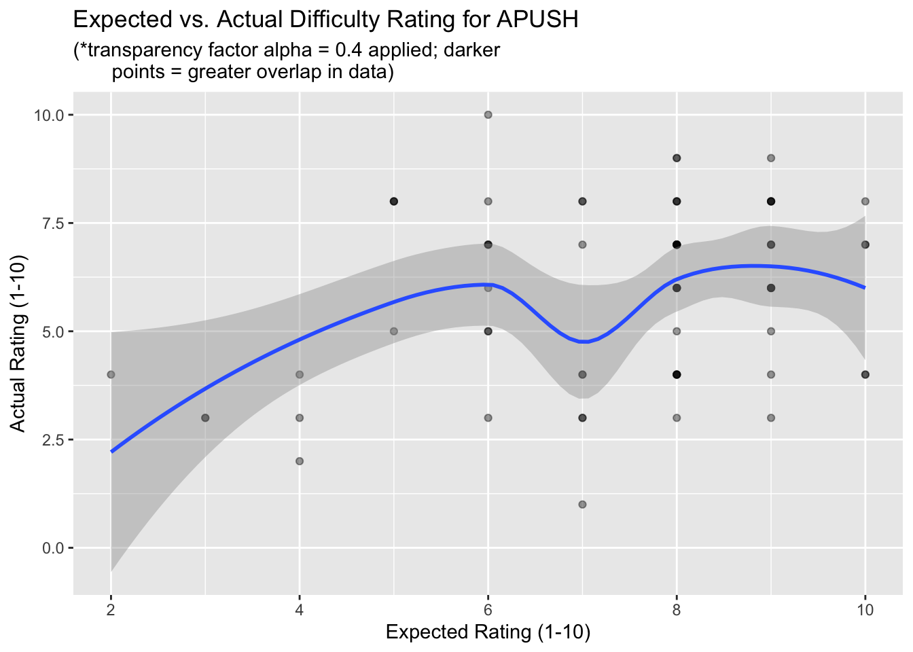
Relationship appears positive, except at around 7, where there is a dip.
Use of AI as a learning tool vs. Score
d2 = d2 %>%
mutate(ai.indicator = ifelse(ai == "Yes", 1, 0))
d2_ai = d2 %>%
filter(ai.indicator == 1)
d2_no_ai = d2 %>%
filter(ai.indicator == 0)g6 = d2_ai %>%
ggplot(aes(x=SCORE)) +
geom_histogram(bins = 3, fill = "steelblue") +
labs(title = "Score distribution for students using AI as Learning Tool",
x = "Exam Score",
y = "Frequency")
g6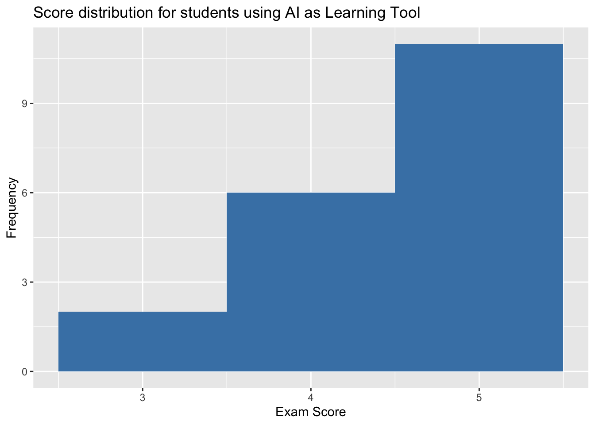
g6_2 = d2_ai %>%
ggplot(aes(x = SCORE)) +
geom_histogram(
aes(y = ..count.. / sum(..count..) * 100),
bins = 3,
fill = "steelblue") +
scale_y_continuous(
name = "Percentage of students obtaining score",
expand = expansion(mult = c(0, 0.05))
) +
labs(
x = "Exam Scores",
title = "Score distribution for AI-using students (%)"
)
g6_2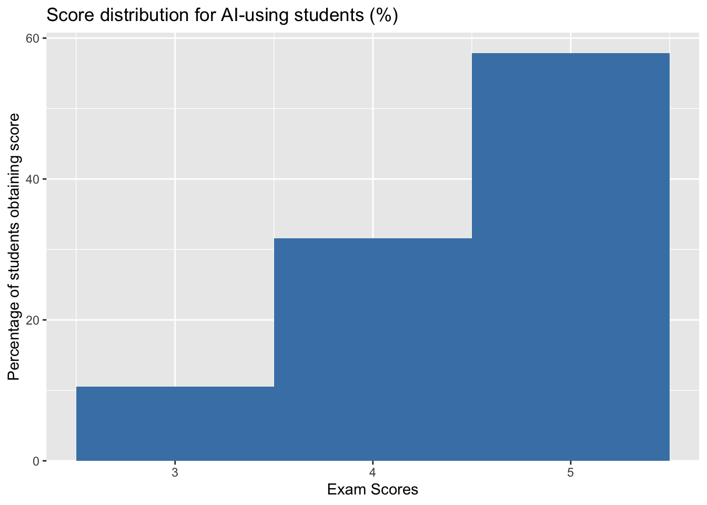
g7 = d2_no_ai %>%
ggplot(aes(x=SCORE)) +
geom_histogram(bins = 3, fill = "firebrick1") +
labs(title = "Score distribution for students NOT using AI as tool",
x = "Exam Score",
y = "Frequency")
g7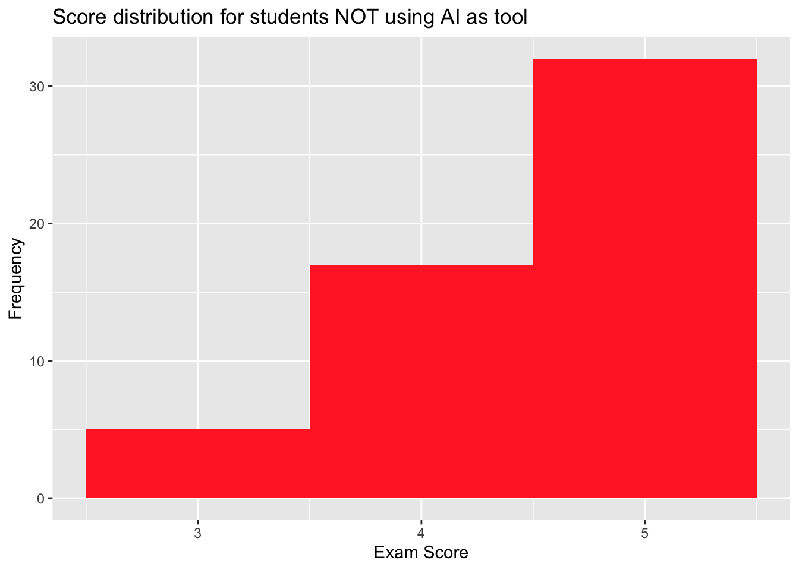
g7_2 = d2_no_ai %>%
ggplot(aes(x = SCORE)) +
geom_histogram(
aes(y = ..count.. / sum(..count..) * 100),
bins = 3,
fill = "firebrick1") +
scale_y_continuous(
name = "Percentage of students obtaining score",
expand = expansion(mult = c(0, 0.05))
) +
labs(
x = "Exam Scores",
title = "Score distribution for non-AI using students (%)"
)
g7_2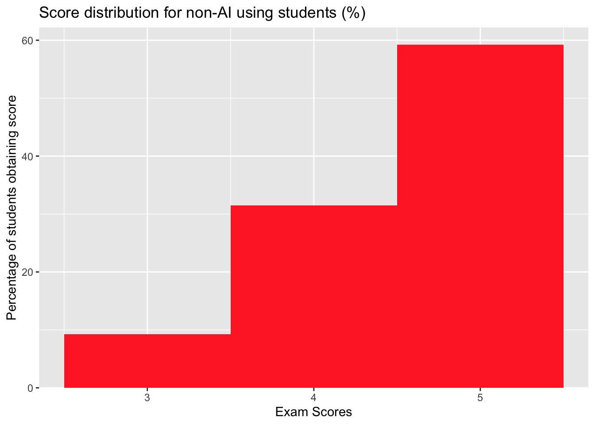
g6_2 + g7_2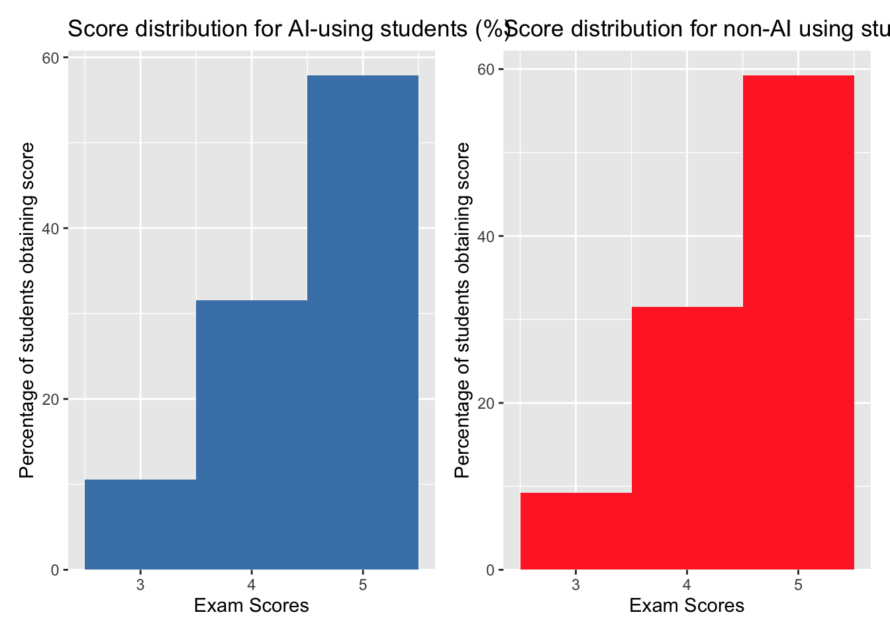
Even though AI-using students have less observations than non-AI using
students, it appears that the distribution of scores is nearly identical, possibly
suggesting that using it as a learning tool for APUSH does not have
a significant impact on score, either positively or negatively. However, one
should also keep in mind the possibility of response bias—some students
who did use AI may have said they didn’t and some who didn’t may have
said they did. Possible reasons include forgetfulness and social desirability
bias, e.g. wanting to appear as only relying on oneself to have obtained the
score rather than using AI. Fear of academic consequences/retaliation/
disciplinary measures is still possible but much less likely to be a
possible reason because
(1) The survey was anonymous and could not be traced back to anyone.
(2) Even if it wasn’t, most people would’ve only been traced back to their online
accounts (which might not be easily connected to a real person)
(3) Most importantly, use of AI as a learning tool was the question being
asked, not as an exam tool. Most teachers permit it as a learning tool.
IV. Linear Models and Inferential Statistics
Linear Modelling
Can we create a regression model that relates scores to these
multiple variables? Which model performs better when we include/remove
variables?
#Exam Score vs. Teacher preparation score
#Quadratic regression might be appropriate here
m1 = lm(SCORE ~ teach.prep + I(teach.prep^2), data = d2)summary(m1)
Call:
lm(formula = SCORE ~ teach.prep + I(teach.prep^2), data = d2)
Residuals:
Min 1Q Median 3Q Max
-1.6752 -0.4210 0.3248 0.5193 0.7152
Coefficients:
Estimate Std. Error t value Pr(>|t|)
(Intercept) 5.00515 0.68977 7.256 9.14e-10 ***
teach.prep -0.25066 0.22507 -1.114 0.270
I(teach.prep^2) 0.02177 0.01662 1.310 0.195
---
Signif. codes: 0 '***' 0.001 '**' 0.01 '*' 0.05 '.' 0.1 ' ' 1
Residual standard error: 0.6864 on 60 degrees of freedom
(10 observations deleted due to missingness)
Multiple R-squared: 0.04851, Adjusted R-squared: 0.0168
F-statistic: 1.53 on 2 and 60 DF, p-value: 0.225Looks like there’s a lot of variability that’s not being captured by the model
(\(r^2 \approx 0.04851\)). This might be because a lot of people can still get 5s
by preparing themselves. Does using overall preparation give better
estimates and model?
m2 = lm(SCORE ~ overall.prep, data = d2)
summary(m2)
Call:
lm(formula = SCORE ~ overall.prep, data = d2)
Residuals:
Min 1Q Median 3Q Max
-1.6717 -0.4956 0.3283 0.4164 1.0327
Coefficients:
Estimate Std. Error t value Pr(>|t|)
(Intercept) 3.87926 0.25125 15.440 <2e-16 ***
overall.prep 0.08804 0.03437 2.562 0.0125 *
---
Signif. codes: 0 '***' 0.001 '**' 0.01 '*' 0.05 '.' 0.1 ' ' 1
Residual standard error: 0.6448 on 71 degrees of freedom
Multiple R-squared: 0.0846, Adjusted R-squared: 0.07171
F-statistic: 6.562 on 1 and 71 DF, p-value: 0.01254Better (adjusted \(r^2 = 0.07171 > 0.04851)\), but maybe there is room
for improvement.
Let’s think about what other factors could affect the score (course/exam
difficulty, time management during exam). We should flip difficulty
to get it on the same scale as the other two because higher ratings for prep
and time management is what we might expect for higher scores
but higher ratings for difficulty might expect lower scores.
d2_reordered = d2 %>%
mutate(overall.diff = 11 - overall.diff)m3 = lm(SCORE ~ overall.prep +
overall.diff +
Time.management.during.exam, data = d2_reordered)
summary(m3)
Call:
lm(formula = SCORE ~ overall.prep + overall.diff + Time.management.during.exam,
data = d2_reordered)
Residuals:
Min 1Q Median 3Q Max
-1.6103 -0.5109 0.2791 0.4818 1.0291
Coefficients:
Estimate Std. Error t value Pr(>|t|)
(Intercept) 3.89995 0.32051 12.168 <2e-16 ***
overall.prep 0.09598 0.03805 2.522 0.014 *
overall.diff -0.04631 0.04353 -1.064 0.291
Time.management.during.exam 0.02134 0.03815 0.559 0.578
---
Signif. codes: 0 '***' 0.001 '**' 0.01 '*' 0.05 '.' 0.1 ' ' 1
Residual standard error: 0.6485 on 69 degrees of freedom
Multiple R-squared: 0.1002, Adjusted R-squared: 0.06108
F-statistic: 2.561 on 3 and 69 DF, p-value: 0.06188Looks like it improved but not by much. Moreover, even though
\(r^2 = 0.1002\), adjusted \(r^2\), which penalizes for unhelpful predictors,
actually decreased. This is overall OK— \(r^2\) isn’t everything and it just
shows that we can’t capture all of the variability in exam score well,
likely due to the predictors being subjective measures reported voluntarily
by students. It could very well be that one student’s interpretation of a
rating of 10 for the difficulty of course/exam is different than another
student’s rating, and hence there is a mismatch that affects the model.
This is supported by the fact that in our visualizations, we could see the
data followed some trends that could be captured by some curve,
but assumptions for linear models might not have been fully met.
In a perfect world, we might have a much higher adjusted \(r^2\) and a
clearer relationship between score and the predictors, but it’s enough
that we were able to see some relationship in the frequency of the
data (e.g. more students who rated some predictor highly scored better).
Inference on a population
Is there statistically significant evidence, based on our sample asking
the corresponding questions, that the difference in means of all
course taking students in their estimation of the expected difficulty vs.
the actual difficulty of the course is not the same (e.g. misjudged the
difficulty)?
Some possible options are available, especially a paired t-test, but we would
have to check certain assumptions:
length(d2$expected.diff) > 30[1] TRUElength(d2$overall.diff) > 30[1] TRUEdf_inf = data.frame(a = d2$expected.diff, b = d2$overall.diff)
g_inf = df_inf %>%
ggplot(aes(x=a-b)) +
geom_histogram() +
labs(title = "Distribution of differences in expected vs. actual
difficulty ratings",
x = "Difficulty Rating (1-10)",
y = "Number of Students (Frequency)")
g_inf`stat_bin()` using `bins = 30`. Pick better value with `binwidth`.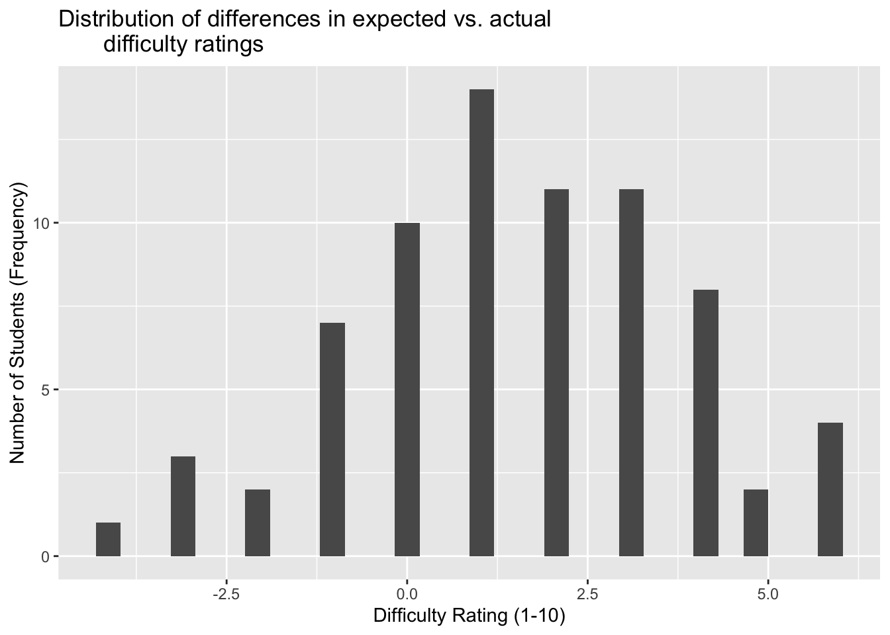
Not only is \(n\) large, but the distribution of differences also looks fairly
normal. From the official national dataset, we know that \(N > 400,000\).
length(d2$expected.diff) == length(d2$overall.diff)[1] TRUElength(d2$expected.diff) < (1/10)*400000[1] TRUETherefore, the sample is approximately independent. The only condition
we can’t be sure of is representative sampling, so we would only be able
to more confidently generalize to populations with similar characteristics
as survey respondents. A smaller issue is the fact that we are using an
ordinal scale, but we chose this test over something like the Wilcox
Ranked-Sign Test because normality condition is well met and difference
between different intervals is not large in the context of our problem which
uses a 10 point scale.
t.test(x=df_inf$a, y=df_inf$b, alternative = "two.sided",
paired = TRUE)
Paired t-test
data: df_inf$a and df_inf$b
t = 5.7448, df = 72, p-value = 2.05e-07
alternative hypothesis: true mean difference is not equal to 0
95 percent confidence interval:
0.9929127 2.0481832
sample estimates:
mean difference
1.520548 Since \(p \approx 2.05 \times 10^{-7}\), we have statistically significant evidence at every
reasonable alpha level (\(\alpha = 0.01, 0.05, 0.10\)) that the difference in means
is not equal to 0 (more students may have misjudged the difficulty).
V. Further work and Interactives
To what extent did the 8 themes of APUSH show up on the exam, on
a scale of 1-5?
df_themes = d2 %>%
pivot_longer(
cols = theme1:theme8,
names_to = "theme",
values_to = "exam_freq"
)
g_anim1 <- ggplot(df_themes, aes(x = exam_freq)) +
geom_bar(
fill = "steelblue",
color = "black",
width = 0.8
) +
scale_x_continuous(breaks = 1:8, minor_breaks = NULL) +
labs(
x = "Rating (1 = Never; 5 = Very Frequently)",
y = "Number of Students",
title = "How frequently did themes 1-8 show up on the exam? ({closest_state})"
) +
theme_minimal() +
transition_states(
states = theme,
transition_length = 2, # how many frames it takes to tween between topics
state_length = 1 # how many frames to hold each topic
) +
ease_aes("sine-in-out") # smoother easing between states
g_anim1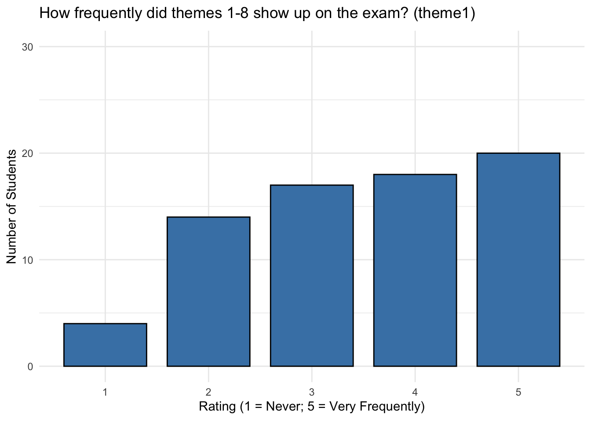
anim_output <- animate(
g_anim1,
nframes = 80, # total frames (8 states × 10 frames per state roughly)
fps = 10, # 10 frames per second → ~8 seconds animation
width = 600,
height = 400
)
# Preview in RStudio Viewer or save to disk:
anim_output
anim_save("theme_freq_animation.gif", animation = anim_output)How difficult are the benchmark “thinking skills” of the course,
on a scale of 1-5?
df_themes = d2 %>%
pivot_longer(
cols = c(Developments.and.Processes, Sourcing.and.Citation,
Claim.and.Evidence.in.Sources, Contextualization,
Making.Connections, Argumentation),
names_to = "skills",
values_to = "difficulty"
)
g_anim2 <- ggplot(df_themes, aes(x = difficulty)) +
geom_bar(
fill = "steelblue",
color = "black",
width = 0.8
) +
scale_x_continuous(breaks = 1:8, minor_breaks = NULL) +
labs(
x = "Rating (1 = Easy; 5 = Hard)",
y = "Number of Students",
title = "Benchmark 'thinking skills' difficulty ({closest_state})"
) +
theme_minimal() +
transition_states(
states = skills,
transition_length = 2, # how many frames it takes to tween between topics
state_length = 2 # how many frames to hold each topic
) +
ease_aes("sine-in-out") # smoother easing between states
g_anim2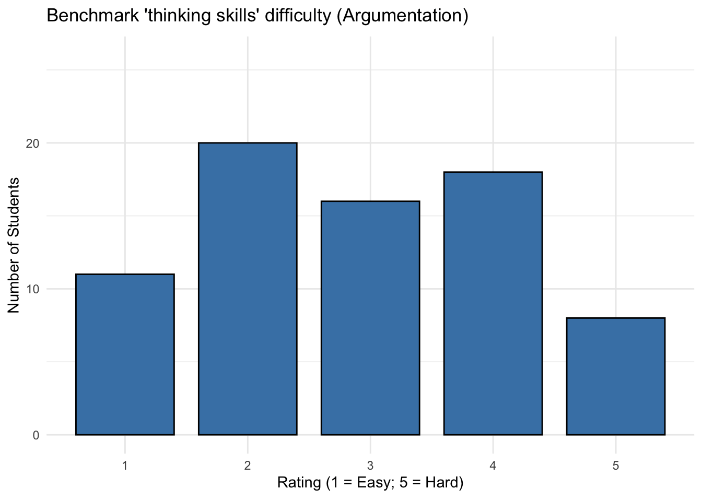
anim_output <- animate(
g_anim2,
nframes = 80, # total frames (8 states × 10 frames per state roughly)
fps = 10, # 10 frames per second → ~8 seconds animation
width = 600,
height = 400
)
# Preview in RStudio Viewer or save to disk:
anim_output
anim_save("skill_diff_animation.gif", animation = anim_output)